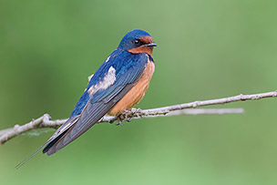

The Barn Swallow (Hirundo rustica) is the most widespread species of swallow in the world. It is a distinctive passerine bird with blue upperparts, a long, deeply forked tail and curved, pointed wings. It is found in Europe, Asia, Africa and the Americas. In Anglophone Europe it is just called the Swallow; in Northern Europe it is the only common species called a "swallow" rather than a "martin".
The Barn Swallow is similar in its habits to other aerial insectivores, including other swallow species and the unrelated swifts. It is not a particularly fast flier, with a speed estimated at about 11 m/s, up to 20 m/s and a wing beat rate of approximately 5, up to 7–9 times each second, but it has the manoeuvrability necessary to feed on flying insects while airborne. It is often seen flying relatively low in open or semi-open areas.
The Barn Swallow typically feeds 7–8 m (23–26 ft) above shallow water or the ground, often following animals, humans or farm machinery to catch disturbed insects, but it will occasionally pick prey items from the water surface, walls and plants. In the breeding areas, large flies make up around 70% of the diet, with aphids also a significant component. However, in Europe, the Barn Swallow consumes fewer aphids than the House or Sand Martins. On the wintering grounds, Hymenoptera, especially flying ants, are important food items. When egg-laying, Barn Swallows hunt in pairs, but will form often large flocks otherwise.
Source: Wikipedia